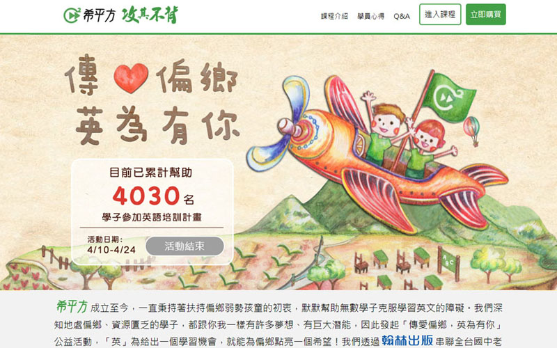
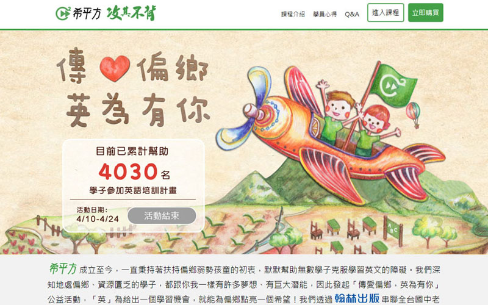

希平方科技股份有限公司
October 2015 - March 2018負責網頁系統開發與服務。包括學習系統維護、新功能開發、活動專案頁面製作等。

中山資管系網站
October 2010 - June 2015系網站採用Epage內容管理系統建構，此系統可以讓系所助理們透過簡單直覺的介面發布消息。 工讀主要任務為為網站排版、撰寫額外特效、以及網站Banner與Logo的製作。
管院訊息輪播系統
August 2014在中山管院主要出入口旁，均有放置專門播放管院訊息的螢幕，此系統即是供其播放使用。管院媒體人員僅需將最新消息透過管院的Wordpress發佈，設定對應的標籤（Tag），系統即會 自動抓取對應資料輪流播放，並產生可直接前往該文章的QR Code。

中山管院電子報
July 2014中山管院電子報每兩周出刊，此頁面會根據後端資料庫中的資料，自行更新電子報目錄，並隨機抓取最新一期電子報中的圖片來做為頭條。 此頁面以Bootstrap框架製作，為響應式設計。

管院電子報製報系統
August 2014考量到管院媒體人員並不一定了解網頁語法的撰寫，因此管院資訊中心為媒體人員製作了一個製報系統。媒體人員僅需將消息透過管院的Wordpress發佈，並設定對應的標籤（Tag），便可透過製報系統來進行電子報的製作。系統會自行抓取Wordpress的資料庫，製作一份靜態HTML檔，媒體人員再透過發報系統即可進行電子報的發送。

Kaoture高雄藝文展演App
November - December 2013iOS行動應用開發課堂專題。此iOS App透過高雄市政府、各個展館所提供的Open Data，將展演資訊進行分類，提供給使用者查詢。另外，也能夠根據使用者所在位置，提供附近的展演活動。使用者可對活動進行收藏或設定通知。 在專案中主要負責Open Data的存取及處理，資訊呈現以及設定通知的部分。


LineMart買賣市集介紹
April 2015碩論主題主要在探討使用者對於行動購物使用之意願，以Line所推出的拍賣服務Line Mart為標的物，由於施測時，此服務僅推出一個多月，考量受測者對於此服務還很陌生，因此製作了一個頁面針對此App進行簡單的介紹。

Exchange-公益交換平台
January 2013電子商務期末專題，為一個概念網站。Exchange是一個公益交換平台，與公益單位合作，由公益單位提供手作作品或食品，讓使用者透過捐贈不需要的物品（衣物、日用品）等來換取平台的商品，藉以降低資源的浪費。
第17屆中山大學資管營
July 2010大學時期第一件作品，以大圖劇照的方式，凸顯出電影的風格。透過青春陽光的使用者介面，將中山大學資訊管理學系介紹給全台各高中生，並吸引他們參加資訊管理生活營。


HaCC哈西西揪咪網
June 2011資料庫管理課程專題，採用PHP及MySQL建構。哈西西揪咪網是一個可以發佈活動，邀請好友參加的網路平台，會員可以在活動結束後，針對活動進行評分。除揪團功能之外，也可以在平台上發佈短文及動態消息，以及上傳照片等。 在專題中主要負責部分為會員登入、註冊、資料驗證以及好友新增刪除等功能。